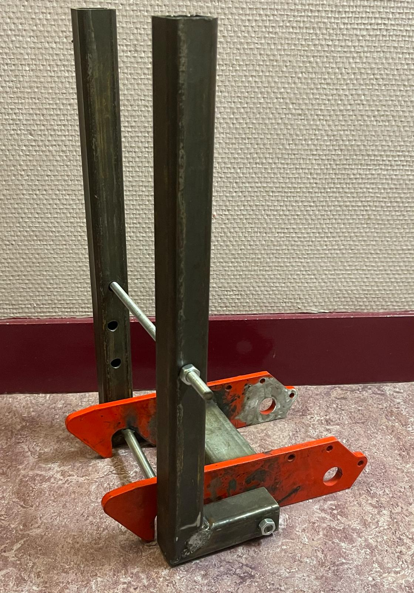
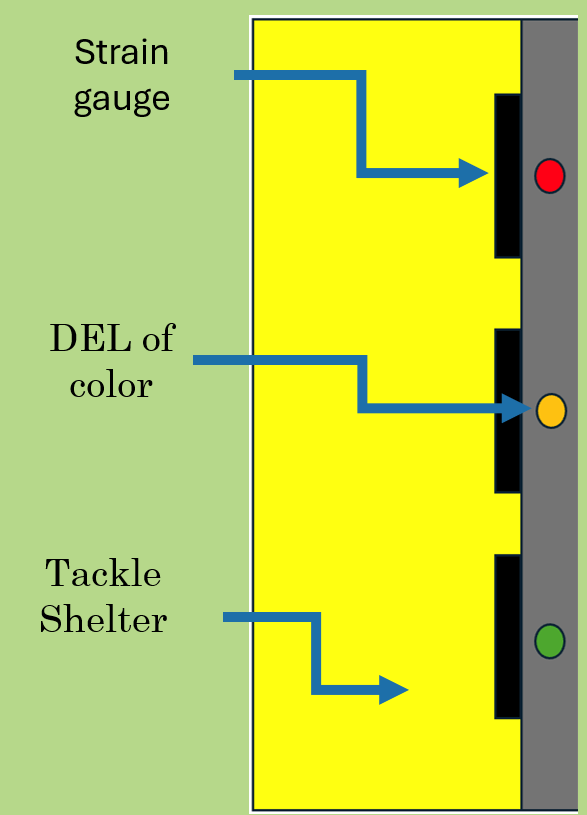
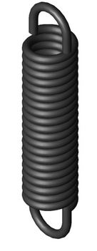
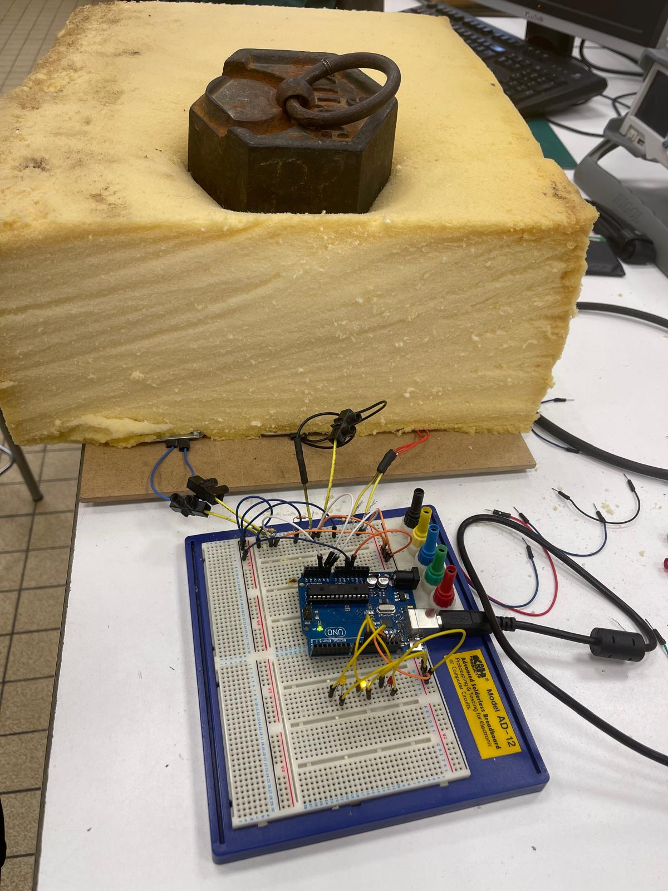
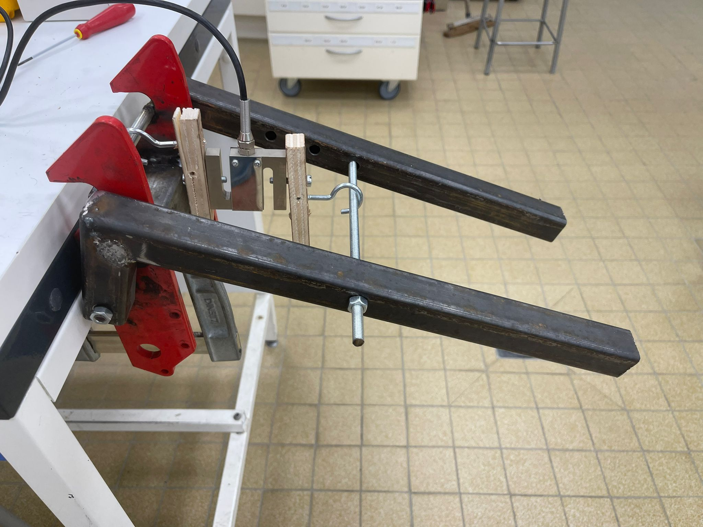

Study and design of a rugby tackle device (50 hrs)
This was a two-person project for the nationwide entrance examination to the Grandes Ecoles (graduate schools). My friend and I, both devoted rugby players, were worried about our sport’s future, and more precisely about the lack of player safety during tackles, which can lead to irreversible damage to the nervous system or even death.

According to World Rugby, 74% of head injuries derive from the tackle area. So we decided to engineer a prototype of a tackle shield, used in training, that could tell whether the tackle was too high or not by detecting the impact point.

The 2 main parts of this project were the electrical part, with the sensors and the processing of the impact point signal, and the mechanical part, with the spring design. The spring uses the kinetic energy of the player’s impact to lift the shield back up after the player has moved away.

Electrical part:
Thanks to force sensors under the foam of the shield, we located the impact point of the player; an LED (red, yellow or green) then turned on to give the height information to the tackler. We tested two main sensors: deformable strain gauges (on-off signal and voltage proportional to the impact) and piezoelectric cells. In the end, we kept the strain gauges, even if they were more expensive, because of their mechanical strength.
Mechanical part:
Thanks to a geometric closure, we obtained the spring length as a function of the position. We also obtained an interval for the spring stiffness by applying the mechanical energy theorem and the fundamental principle of statics to the system. With those two results, we chose the right spring to fit the project needs.

After those theoretical studies, we built a 1:3 scale prototype and ran tests on both the electrical and the mechanical parts to verify the theoretical results.


Thanks to this project, we designed a safe device allowing a better educational approach to the tackle phase. Nevertheless, due to a lack of time to go further and the different paths we both took, we did not design the final product or market it.